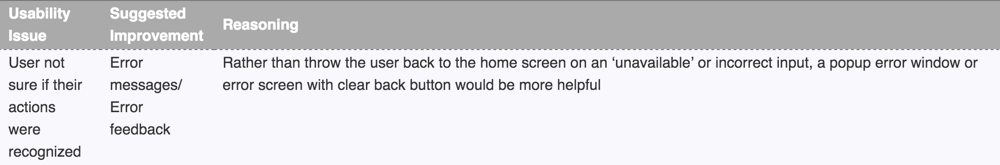
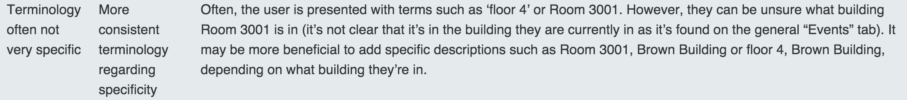

Design evolution
Provided with the WAKR group's formative feedback, we reviewed test results and discussed their suggested changes. Based on our own knowledge of the system, we chose to follow some of the suggestions exactly while attempting to find underlying or root problems causing the usability issues identified in user tests for others.
The changes we made are summarized below.
1. Minimize user confusion when a path has not been implemented.
In our first implementation of the computer prototype, when media for a path directing the user from one location to another did not exist, the hyperlink would return the user to the homepage. Although this was intentional behaviour created specifically for testing, we understand that users encountering this event will think the system is misbehaving. Clearly, it is an important usability issue opposing Nielsen's Visibility System Status heuristic, and was specifically addressed by the WAKR group.
To mimic the realistic situation where not all routes in a building have been created, we now dynamically render buttons in a disabled state when the corresponding route does not exist. However, to maintain some semblance to a fully-functional system, we discard this behaviour on the "Services" tab of the homepage, and simply show the user an error message. This solution is advantageous because it maximizes Error prevention while not masking sources of user confusion caused by the labeling, and it will not distract future testers when viewing a page with no active routes.
2. Improve system performance and provide feedback.
Although not explicitly listed as a suggested improvement in WAKR's formative feedback, improving system performance was mentioned numerous times in their report. One of the most insightful comments was this: "The application was prone to lagging which caused users to over-click, erroneously putting them steps ahead in their path." Such an interpretation of observed results is extremely valuable because it addresses the cause of errors, not the errors themselves. It relates to both Error prevention and Flexibility and efficiency of use from Nielsen's usability heuristics.
To alleviate page-load and improve the rendering times of media, we (1) removed extraneous GIFs for steps including clear images and straightforward directions, and (2) implemented asynchronous asset preloading to better utilize the time before a user requests the next instruction.
3. Remove unnecessary buttons and increase button operability.
WAKR criticized that two buttons in particular were not useful: "Some buttons (example, the home button and the magnifying glass icon) seem to serve no real purpose." Their critique is quite straightforward and this change reflects improved usability along two heuristics.
- Consistency and standards: The magnifying glass icon serving only as a metaphor for search-functionality, although simple, was counterproductive as users would often try to search by clicking the icon itself. This acts in opposition to well-known standards where anything in the search input field is clickable and will allow the user to begin typing. Now, the search bar is clearly outlined and the search icon is selectable, which follows long-standing industry conventions for searching.
- Aesthetic and minimal design: The interface itself did not contain "irrelevant" information, however the two methods of returning to the home screen (using the arrow in navigation or clicking the home icon in the footer) was indeed redundant. In an attempt to truly refine the design, we removed the home icon from the footer, as keeping nonessential elements clutters the page and increases the mental-load on the user.
4. Improve the descriptiveness of locations and instructions.
Obviously, if a user finds our choice of labeling ambiguous or is confused by the wording of certain directions, the system fails along the measure of Match between system and real world. For this reason, we have modified some of the wording used in the system, so the user can more quickly understand what action is needed on their part.
A correlary to improving instructions is improving the user's awareness of where they are, currently, in the building. For this implementation of the prototype, we have also updated the "Current Location" label at the bottom of the screen, such that it now specifies that the user is in the Brown building.
5. Make it obvious that the restrooms are organized by proximity.
Under the initial assumption that the first item in a list was the most important, and that users would only pay attention to the first thing they recognized, we did not indicate that the restrooms were sorted in any way. Fortunately, WAKR's testing exposed that some users did not find this clear, as a list of 5 identically labelled restrooms was presented to them. Now, the closest washroom is highlighted with an off-white border accompanied by a small star label with the word "closest".
This improves the system along Nielsen's heuristic Visibility of system status because it visually exposes a convenience feature that is available, and the heuristic Flexibility and efficiency of use because it optimizes for the common-case, where a user simply wants to find the nearest restroom as quickly as possible.
6. Increase user-awareness of how the system works.
This improvement was implemented by adding an "Info" button where the home button used to exist. Clicking the info button takes the user to a short FAQ page, answering some presumably common questions about how the system operates. Our goals for the FAQ page were:
- Emphasize that beacons are part of the system, so the user can understand the system's abilities and limitations. This enhances the Help and documentation available to the user, and allows them to create a better mental-model for what functionalities exist.
- Use plain language to describe the high-level functionality of the Blueprint system. This hopefully prevents users from increased confusion when viewing this page from curiosity or mistake. It also follows Nielsen's heuristic Match between system and real-world because the physical implementation of beacons is descrbed in as clear language as possible.
Prototype implementation (with revisions)
Our revised prototype is available here1, 2.
1. Please shrink your browser size down when viewing the web application on a desktop computer or laptop. Due to nature of our system, a desktop-friendly UI was not our priority.2. For a realistic experience, iPhones and either Google Chrome or Safari for browsing is best.
User manual (with revisions)
Documentation refinement
Only a few changes were made to the user manual, and these relate specifically to the images of screen layouts we included in the document. Most of the functionality of system did not change, but certain elements, we believe, are now more usable. A summary of changes made to our user manual are outlined below.
- Homescreen and navigation screen images.
- The photos included accurately depict the current implementation of our prototype.
- Feedback and prototype-specific screen images.
- We included a third page in our "Screen Overview" section, which now shows the pages used to give the user more information, or facilitate the evaluator's task.
- Accessing more info (FAQ) step-by-step.
- This tells the user how to view the FAQ page of our prototype.
- Step-by-step images.
- The photos included accurately depict the current implementation of our prototype.